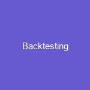

News
Backtesting Software
Backtesting Software
Statistical Modeling
Machine Learning Techniques
Risk Management Strategies
Strategy Testing Tools
Automated Trading Rules
Quantitative Strategies
Quantitative Strategies
Trade Execution Algorithms
API Integration
Order Entry and Management
High Frequency Trading
Trade Reporting and Compliance
Automated Trading Platforms
Automated Trading Platforms
Backtest Environment Setup
Strategy Development Process
Risk Management Rules
Portfolio Construction
Execution Analytics
Algorithmic Trading Systems
Algorithmic Trading Systems
Data Visualization
Financial Modeling
Portfolio Valuation
Predictive Analytics
Data Mining
About Us
Risk Management Strategies
Risk Management Strategies
Risk management is a crucial part of any successful business. It involves identifying, analyzing, and responding to potential risks that could negatively affect an organization’s operations, profitability, or reputation. There are various strategies available for managing risk, including avoidance, mitigation, transfer, and acceptance.
Avoidance entails eliminating or avoiding the risk altogether. This can be accomplished by changing processes or procedures that may increase risk or discontinuing activities that involve high levels of risk. Mitigation involves reducing the likelihood or impact of a risk should it occur. Possible strategies include implementing safeguards such as firewalls to protect against cybercrime or purchasing insurance policies to offset financial losses from accidents. Transferring the risk is another strategy in which organizations pass responsibility for dealing with a particular risk onto another entity through contracts or other agreements. Finally, accepting the risk means acknowledging its presence and taking steps to manage it without attempting to avoid it altogether.
Organizations must carefully consider their individual needs when selecting which approach best suits them and their objectives in order to minimize potential harm while still achieving desired outcomes. Risk management strategies are essential components of any business’s success in today’s ever-changing global environment.
Check our other pages :
Algorithmic Trading Systems
Trade Execution Algorithms
High Frequency Trading
Frequently Asked Questions
What are the most popular backtesting platforms?
Popular backtesting platforms include QuantConnect, Quantopian, and Backtrader.
How can I use a backtesting platform to manage risk?
Risk management strategies can be implemented on a backtesting platform by testing different parameters such as stop loss orders, position size limits, or diversification models.
Does using a backtesting platform guarantee success?
No, using a backtesting platform does not guarantee success and it is necessary to understand risk management principles in order to gain an advantage from using a backtesting platform.
What criteria should I look for when choosing a backtesting platform?
When choosing a backtesting platform you should look for ease of use, accuracy of data sets provided, cost effectiveness, customer support availability and scalability options.
Are there any limitations associated with using a backtesting platform?
Yes, some limitations associated with using a backtesting platform include limited data sets available for testing and lack of real-time market data streaming capabilities.